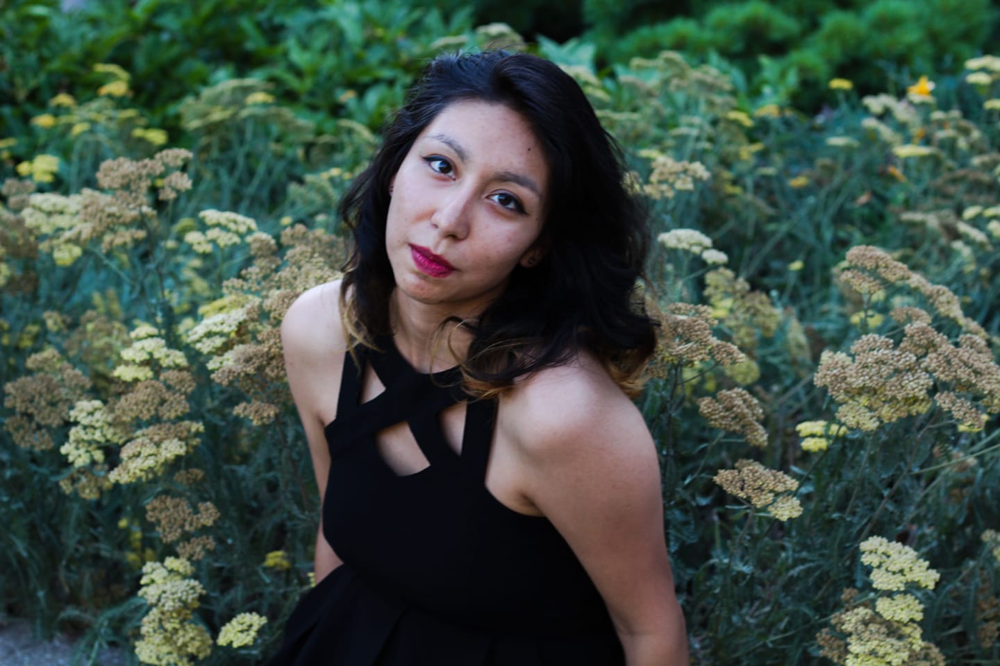

Welcome
Browse my acomplishments at your leasure

Azucena Gonzalez
Committed to Excellence
Currently majoring in convergence journalism with an emphasis in multi-media production.
As a convergence student I am the jack of all trades. With knowledge in audio, broadcast, text, photo, and social media.
Reporting and editing audio are my strongest skills. And broadcast is my weakest. But I am always willing to learn more and improve my skills.